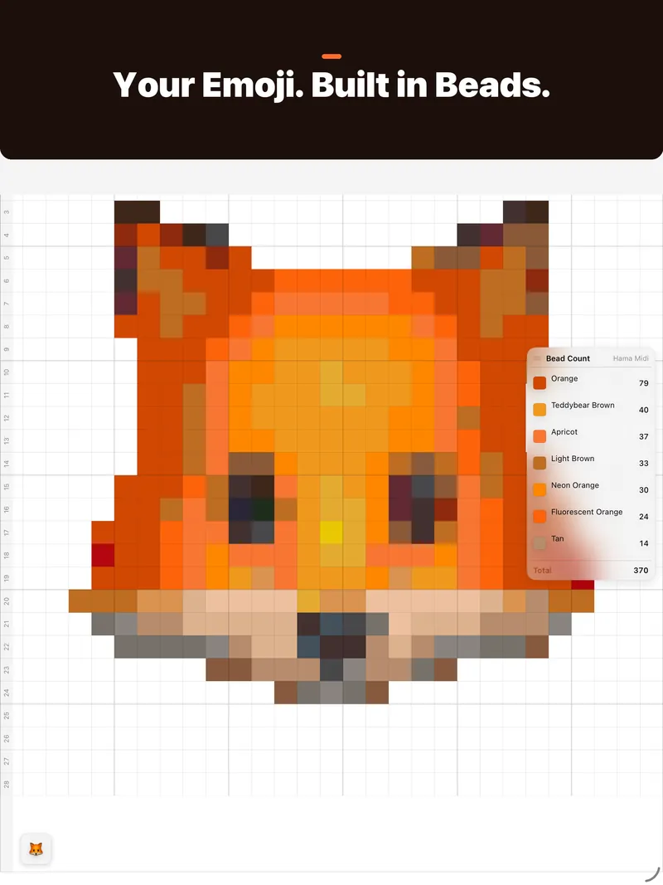
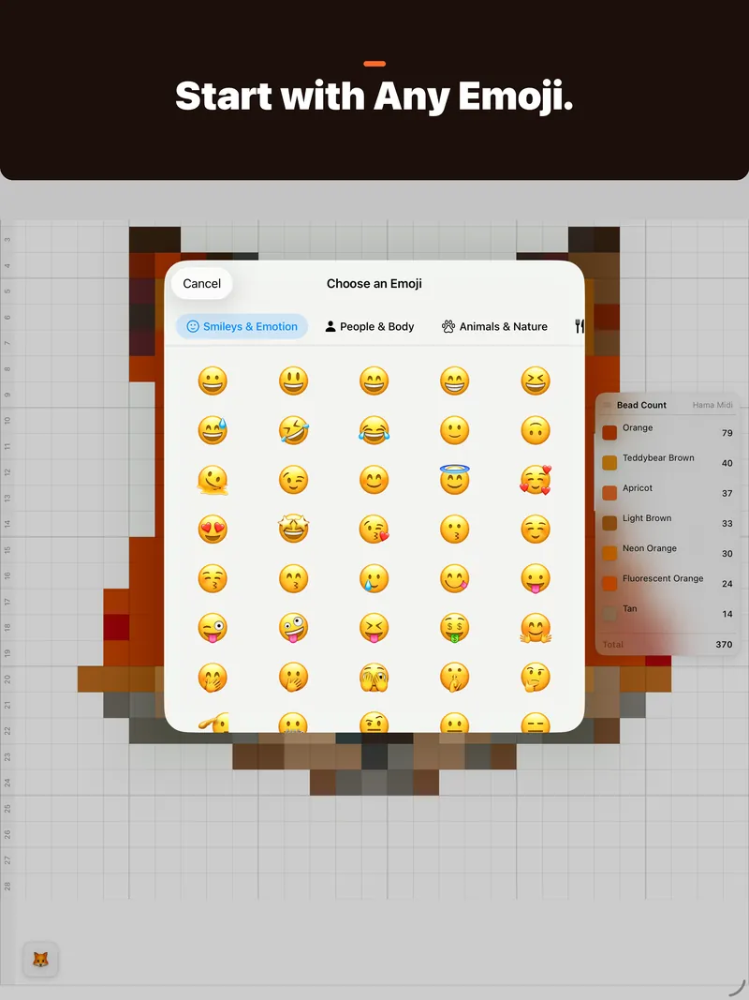
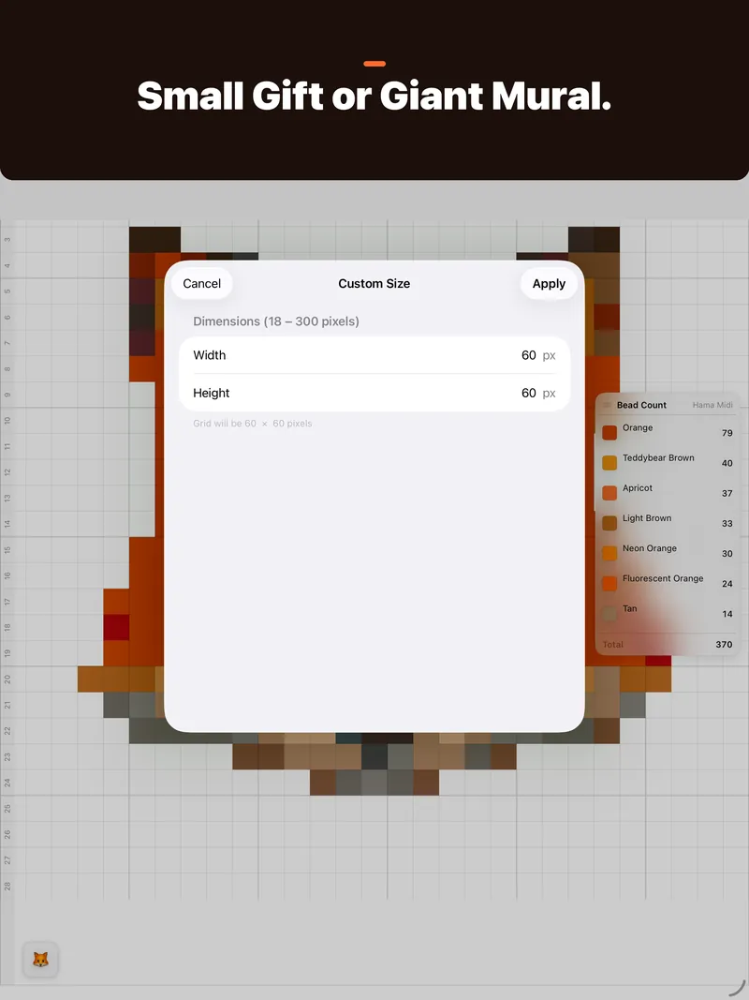

Turn photos into bead art.
Beadify converts any photo or emoji into a pixel bead pattern you can physically build — with exact bead counts and color codes.
No account required · Photos are never uploaded to us



Features
Any source
Import from your photo library, take a photo with your camera, or pick from 1,900+ emoji across 8 categories.
Perceptual color matching
Every pixel snaps to the nearest real bead color using Oklab — a perceptually uniform color space designed for exactly this.
Build Mode
Build board by board and row by row, with tap-to-check-off progress, so you never lose your place mid-pattern.
Pattern editor
Paint, fill, replace colors or erase individual beads after conversion, with full undo and redo.
Bead shopping list
Get exact buy quantities per color, with spares built in, exportable as a CSV you can take to checkout.
Palette conversion
Switch brands and see the nearest-match substitution for every bead — useful when your local shop only carries one line.
Project library
Save, rename, and revisit multiple patterns. Everything syncs automatically via iCloud — no account, no server.
Multi-board layouts
Giant patterns split across pegboards with seam guides, so oversized builds stay easy to assemble.
Print & export
Print the chart to any AirPrint printer, or export a PDF or PNG to keep beside you while you build.
Built-in bead palettes
Match to real beads from the brands you already use — or build a custom palette from the colors you own.
- MARD 213 colors
- Artkal C 174 colors
- Artkal S 176 colors
- Artkal A 145 colors
- Artkal M 220 colors
- Perler 95 colors
- Hama Midi 92 colors
- Hama Mini 78 colors
- Hama Maxi 25 colors
- IKEA PYSSLA 92 colors
- Nabbi 30 colors
Beadify Pro
Everything above is free. Beadify Pro is an optional one-time purchase with extra tools for bigger projects.
- Board-by-board PDF
- Multi-board patterns 2×2 · 3×3
- Limit Colors
- Remove Background
- Remove Stray Beads
- No banner ad on iPhone and iPad
- Future Pro tools included
No subscription. Bought Remove Ads or Beadify 1.7? You already have Pro.
Questions
Is Beadify free?
Yes. Every feature on this page is free, apart from the ones listed under Beadify Pro. Pro is a one-time purchase, not a subscription, and turns off the banner ad on iPhone and iPad.
Are my photos uploaded anywhere?
Not to us or anyone else. Photos are turned into patterns on your device. Each pattern keeps a copy of the photo it was made from, and patterns sync through your own private iCloud account if you're signed in. There's no Beadify account. See the privacy policy.
Does it work on Mac?
Yes. Beadify runs on iPhone, iPad and Mac, and your patterns follow you through iCloud.
Something's wrong, or I have an idea
Beadify Support answers common questions and has every way to reach me.
Start your first pattern.
Free on the App Store for iPhone, iPad, and Mac.
Need help with Beadify? Get support or email alexander.xiangyu.sun@gmail.com.